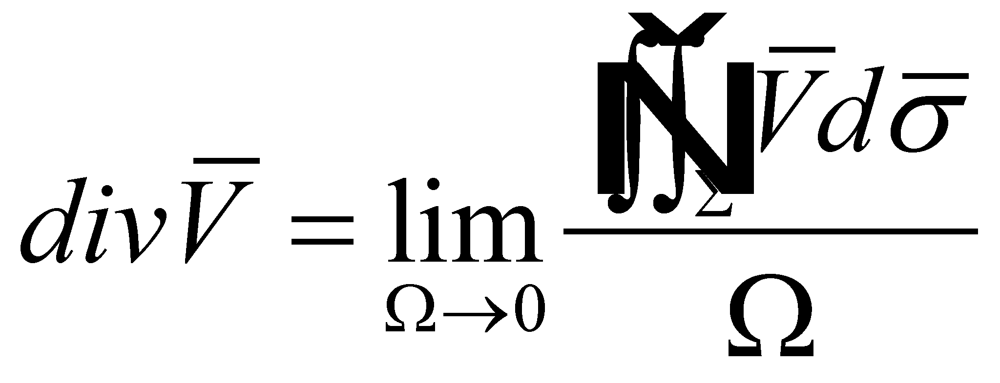

|
|
|
This annex shows as a remember the most frequent relations from the theory of vector fields which are used throughout the entire paper, with the specification that the notion’s denominations are the ones from the mathematics field, some of them being redefined in the present paper.
The gradient of a scalar field (x,y,z) is a vector given by the following relation:
(X.8.1)
where are the versors of the axes X,Y,Z.
The elementary flux of the vector is named the product , where is the oriented area element (). If the area element surrounds a point P(x, y, z), then, the elementary flux will be in point P.
Total
(global) flux of
the vector
through any surface
 is:
is:
(X.8.2)
The total flux
 through a confined surface
through a confined surface
 which is the boundary of a volume
is also named the productivity
of the volume
.
The ratio
is the average productivity
of the volume unit and the limit of this ratio when all the points
of the surface
tend to an internal point P,
it is named the divergence
of the vector field V in the
point P.
which is the boundary of a volume
is also named the productivity
of the volume
.
The ratio
is the average productivity
of the volume unit and the limit of this ratio when all the points
of the surface
tend to an internal point P,
it is named the divergence
of the vector field V in the
point P.
 (X.8.3)
Under the assumption that the partial derivatives of are continuous in P, there is a limit which can be expressed by means of:
(X.8.4)
The
curl of
a vector field
,
,
is defined by using the circulation
on a confined curve C. A plane runs through the
point P, having the versor
of the normal line in
 .
A confined curve C
which
surrounds the point P, placed in this plane delimit an area
.
A confined curve C
which
surrounds the point P, placed in this plane delimit an area
 .
It is known that the limit of the ratio
when all the points of the curve C tend to P is
the projection of a vector on the direction
.
It is known that the limit of the ratio
when all the points of the curve C tend to P is
the projection of a vector on the direction
 ,
that is a vector which is known as the curl
of the field
in
the point P.
Therefore,
,
that is a vector which is known as the curl
of the field
in
the point P.
Therefore,
(X.8.5)
where
(X.8.6)
Circulation
on the curve C
goes directly against
 (rule of the right screw). The curl
may be also written as a symbolic
determinant:
(rule of the right screw). The curl
may be also written as a symbolic
determinant:
 (X.8.7)
(X.8.7)
The divergence’s integral formula (Gauss-Ostrogradski):
(X.8.8)
where
 is the confined area of the volume
.
The sense of the normal line on the oriented surface is considered to
be positive to the outside.
Other two relations are coming from the relation X.8.8, that is the
curl’s
integral formula:
is the confined area of the volume
.
The sense of the normal line on the oriented surface is considered to
be positive to the outside.
Other two relations are coming from the relation X.8.8, that is the
curl’s
integral formula:
(X.8.9)
which may be also written as:
(X.8.10)
and the gradient’s integral formula:
(X.8.11)
Stokes’s formula:
(X.8.12)
where
 is any surface limited by the confined curve C.
is any surface limited by the confined curve C.
Copyright © 2006-2011 Aurel Rusu. All rights reserved.